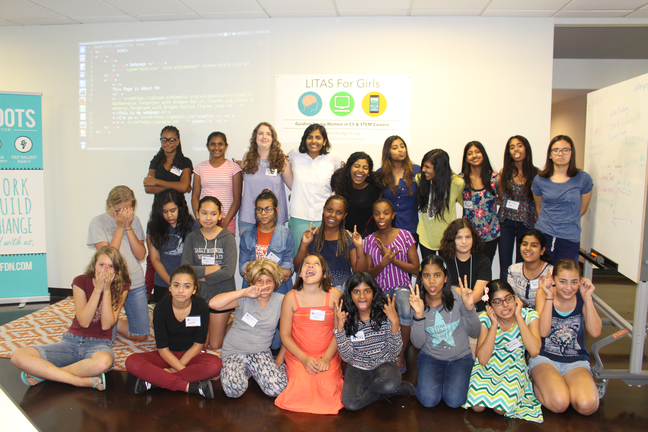

In 2014 as a Junior in High school, I started LITAS (Learning IT, Applications, and Software) for Girls as an after-school club to not only teach girls coding, but to help them apply coding to solve real problems in their own lives. The club was so successful that I turned it into a nonprofit.
Today, LITAS is an international nonprofit-- with chapters in the US and India working ardently to bridge the gender gap in CS + STEM. LITAS helps middle and high school girls code with a purpose through summer incubators, technology showcases, mentoring, and after-school clubs.
Last summer, I had the opportunity to travel to Haryana, India to kickstart our international LITAS movement. I'm a prolific blogger, so you can read all about my experiences on Medium or LinkedIn.